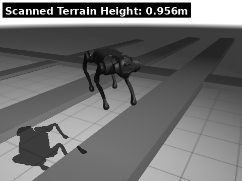

Perception-Based RL for Quadruped Locomotion
Selected project demos showing the ray-cast height scanner, proprioceptive versus exteroceptive policies, and the teacher-student extension.
Ray-Cast Height Scanner
The exteroceptive observations were produced by ray-casting height grids around the robot and adding the measured terrain heights to the policy state.

Proprioceptive and Exteroceptive Policies
The proprioceptive baseline and exteroceptive policy are compared on one case where the added sensing helped and one case where it did not.
Case 2: Improvement
Case 5: No Improvement
Teacher-Student Extension
The student policy was trained with limited observations and an imitation loss from a privileged teacher. The comparisons below show the student policy against the exteroceptive baseline.